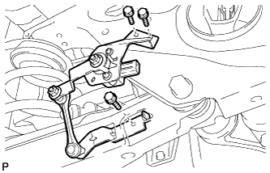
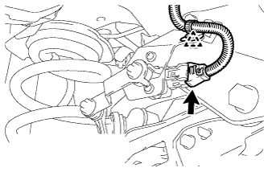
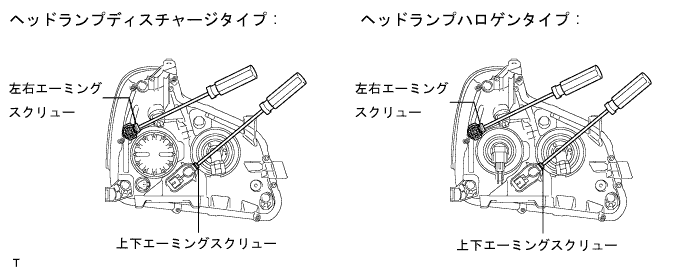

Height Control Sensor Sub-assembly Rear Installation |
| 1. Install Height Control Sensor Sub-assembly Rear (Drive Type FF) |
 |
Install the height control sensor assembly (rear) with the 2 bolts.
 |
Connect the connector and engage the clamp.
| 2. Install Height Control Sensor Sub-assembly Rear (Drive Type 4WD) |
 |
Install the height control sensor assembly (rear) with the 3 bolts.
 |
Connect the connector and engage the clamp.
| 3. Headlight Leveling ECU Assembly Initialization Procedure |
Vehicle Condition Check (*1)
Put the vehicle in the following condition.
Check Warning Display
3 seconds after turning the IG OFF → ON, check the headlight leveling warning light indication in the combination meter.
| Work Description | Warning Display |
|---|---|
| Initialization malfunction or headlight leveling computer assembly replaced (new) | Blinks |
| Height control sensor replacement/removal, suspension replacement, etc. | Goes off |
Initialization Operation
 |
Using SST, connect terminals 8 (LVL) and 4 (CG) of DLC3.
Within 20 seconds after connecting the initialization terminals, operate the light control switch OFF → HEAD 3 times or more. (*2)
Check the warning display.
| Work Description | Warning Display |
|---|---|
| Replace Headlight Leveling Computer Assembly (New) | Blinks 2Hz2 times → blinks 2Hz3 times, then goes off (initialization completed normally) |
| Height control sensor replacement/removal, suspension replacement, etc. | No blinking → blinks 2Hz3 times, then goes off (initialization completed normally) |
| 4. Preparation for Headlight Aiming |
)Adjust the tire pressure to the specified value.
Have 1 person sit in the driver seat.
Start the engine and keep the battery in a charging condition.
 |
Set the leveling switch dial to 0. (Halogen type headlight)
| 5. Headlight Aiming Adjustment (Using Low Beam Tester) |
Set the distance between the tester and the headlight lens to the tester's specified value.
Position the tester so that it squarely faces the vehicle.
 |
Set up the headlight tester.
Set the angle adjustment knobs of the tester to 10cm downward and 0cm left/right.
 |
Align the condenser lens of the tester with the center of the headlight.
| Mark | |
|---|---|
| A | Low Beam Bulb Center |
| B | High Beam Bulb Center |
Take measures so that the light from the other headlight does not affect the measurement.
Turn on the headlights on low beam.
Adjust the low beam aim according to the instruction manual of the headlight tester used.

| 6. Headlight Luminous Intensity Inspection (Using Low Beam Tester) |
After adjusting the aim, inspect the luminous intensity with the headlight tester.
| 7. Headlight Aiming Adjustment (Using Low Beam Screen) |
Prepare a piece of thick white paper.
 |
Prepare an aiming screen as shown in the illustration. (Discharge type headlight)
 |
Prepare an aiming screen as shown in the illustration. (Halogen type headlight)
 |
Set the distance between the tester and headlight lens to 3m.
Position the tester so that it squarely faces the vehicle.
|
Set up the headlight tester.
Align the center of the tester condenser lens with the headlight center.
| Mark | |
|---|---|
| A | Low Beam Bulb Center |
| B | High Beam Bulb Center |
Align the center hole of the adjustment screen with the center of the tester condenser lens, and attach it with tape or equivalent.
Turn on the headlights on low beam.
If it deviates significantly from the reference line, adjust the low beam aim so that the cut-off line aligns with the reference line.
| 8. Headlight Luminous Intensity Inspection (Using Low Beam Screen) |
Set the distance between the tester and the headlight lens to the tester's specified value.
Position the tester so that it squarely faces the vehicle.
|
Set up the headlight tester.
Set the angle adjustment knobs of the tester to 11cm downward and 23cm to the left.
|
Align the condenser lens of the tester with the center of the headlight.
| Mark | |
|---|---|
| A | Low Beam Bulb Center |
| B | High Beam Bulb Center |
Take measures so that the light from the other headlight does not affect the measurement.
Turn on the headlights on low beam.
After aiming adjustment, inspect with the headlight tester.
| 9. Headlight Aiming Adjustment (Using High Beam Tester) |
Set the distance between the tester and the headlight lens to the tester's specified value.
Position the tester so that it squarely faces the vehicle.
|
Set up the headlight tester.
Set the angle adjustment knobs of the tester to 1/5cm of the headlight center height downward and 0cm for both left and right. (LH headlight)
Set the angle adjustment knobs of the tester to 1/5cm of the headlight center height downward and 5cm to the left. (RH headlight)
|
Align the condenser lens of the tester with the headlight center.
| Mark | |
|---|---|
| A | Low Beam Bulb Center |
| B | High Beam Bulb Center |
Take measures so that the light from the other headlight does not affect the measurement.
Turn on the headlights with high beam.
Adjust the high beam aim according to the handling procedure of the headlight tester used.
| 10. Headlight Luminous Intensity Inspection (Using High Beam Tester) |
After adjusting the aim, inspect the luminous intensity with the headlight tester.